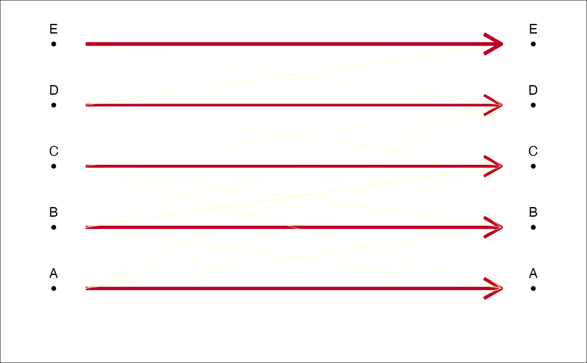
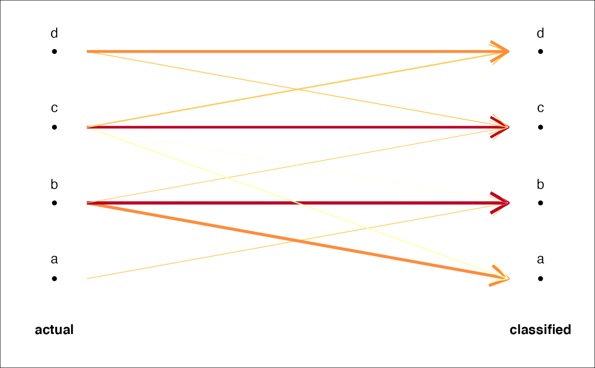
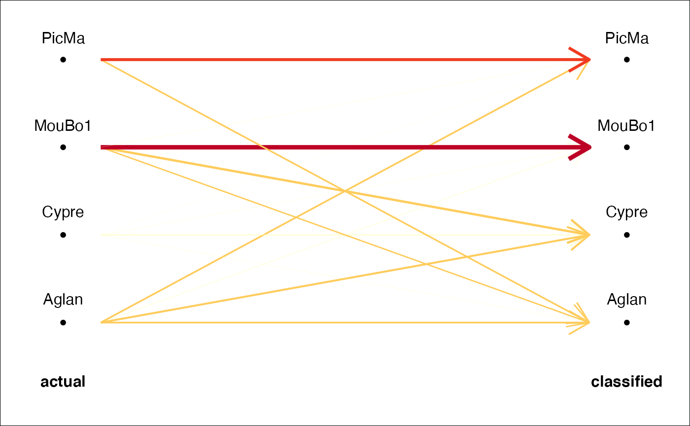

Plots a cross-correlation table
Or any contingency/confusion table. A simple graphic representation based on variable width and/or color for arrows or segments, based on the relative frequencies.
plot_CV2(x, ...) # S3 method for LDA plot_CV2(x, ...) # S3 method for table plot_CV2(x, links.FUN = arrows, col = TRUE, col0 = "black", col.breaks = 5, palette = col_heat, lwd = TRUE, lwd0 = 5, gap.dots = 0.2, pch.dots = 20, gap.names = 0.25, cex.names = 1, legend = TRUE, ...)
Arguments
| x | an LDA object, a table or a squared matrix |
|---|---|
| ... | useless here. |
| links.FUN | a function to draw the links: eg segments (by default), arrows, etc. |
| col | logical whether to vary the color of the links |
| col0 | a color for the default link (when |
| col.breaks | the number of different colors |
| palette | a color palette, eg col_summer, col_hot, etc. |
| lwd | logical whether to vary the width of the links |
| lwd0 | a width for the default link (when |
| gap.dots | numeric to set space between the dots and the links |
| pch.dots | a pch for the dots |
| gap.names | numeric to set the space between the dots and the group names |
| cex.names | a cex for the names |
| legend | logical whether to add a legend |
See also
Examples
# Below various table that you can try. We will use the last one for the examples.# NOT RUN { #pure random a <- sample(rep(letters[1:4], each=10)) b <- sample(rep(letters[1:4], each=10)) tab <- table(a, b) # veryhuge + some structure a <- sample(rep(letters[1:10], each=10)) b <- sample(rep(letters[1:10], each=10)) tab <- table(a, b) diag(tab) <- round(runif(10, 10, 20)) tab <- matrix(c(8, 3, 1, 0, 0, 2, 7, 1, 2, 3, 3, 5, 9, 1, 1, 1, 1, 2, 7, 1, 0, 9, 1, 4, 5), 5, 5, byrow=TRUE) tab <- as.table(tab) # }# good prediction tab <- matrix(c(8, 1, 1, 0, 0, 1, 7, 1, 0, 0, 1, 2, 9, 1, 0, 1, 1, 1, 7, 1, 0, 0, 0, 1, 8), 5, 5, byrow=TRUE) tab <- as.table(tab) plot_CV2(tab)plot_CV2(tab, arrows) # if you prefer arrowsplot_CV2(tab, lwd=FALSE, lwd0=1, palette=col_india) # if you like india but not lwdsplot_CV2(tab, col=FALSE, col0='pink') # only lwdplot_CV2(tab, col=FALSE, lwd0=10, cex.names=2) # if you're getting oldplot_CV2(tab, col=FALSE, lwd=FALSE) # pretty but uselessplot_CV2(tab, col.breaks=2) # if you think it's either good or badplot_CV2(tab, pch=NA) # if you do not like dotsplot_CV2(tab, gap.dots=0) # if you want to 'fill the gap'plot_CV2(tab, gap.dots=1) # or not#>#>trilo.l#> * Cross-validation table ($CV.tab): #> classified #> actual a b c d #> a 0 5 2 0 #> b 3 12 1 0 #> c 0 3 11 4 #> d 0 0 3 6 #> #> * Class accuracy ($CV.ce): #> a b c d #> 0.0000000 0.7500000 0.6111111 0.6666667 #> #> * Leave-one-out cross-validation ($CV.correct): (58% - 29/50):plot_CV2(trilo.l)#>#>plot_CV2(opl)